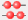

Diese kurze Präsentation führt Sie in wenigen Minuten in den Umgang mit mathGUIde ein.
mathGUIde ist einerseits ein math-guide, weil es Sie durch die Mathematik (für Informatiker) führt, andererseits ist GUI die Abkürzung für Graphical User Interface (grafische Benutzeroberfläche).
Das mathGUIde-Fenster hat folgende Bestandteile:
1 Eingabefenster
Hier geben Sie Ausdrücke (z.B. 3*7), Anweisungen
(z.B. a = 3*7) oder Funktions- oder Klassendefinitionen ein,
die mathGUIde berechnen soll.
Um eine neue Zeile zu beginnen, drücken Sie dabei Return.
Zum Auswerten der Eingaben klicken Sie auf das Abakus-Symbol 
oder drücken Strg+Return.
Hinweis für Mac OS: Der Strg-Taste entspricht auf der Macintosh-Tastatur die cmd-Taste und nicht die ctrl-Taste.
2 Protokollfenster
Hier werden alle Ausgaben Ihrer Berechnungen und ihre Ergebnisse protokolliert.
Falls das Ergebnis einer Berechnung ein Funktionsplot oder ein
(graphentheoretischer) Graph ist, werden hier spezielle Registerkarten aktiviert.
Die Platzverteilung zwischen Eingabefenster und Protokollfenster können Sie durch Ziehen der gedrückten Maus auf dem Trennstreifen verändern.
Zuweisungen haben kein Ergebnis. Ausnahme: Bei einer einzelnen (einzeiligen) Zuweisung zeigt mathGUIde den zugewiesenen Wert an.
3 Guide-Fenster
Dieses Fenster (in dem Sie gerade lesen) ist ein Browser,
in dem Sie Präsentationen betrachten können.
Sie können im Guide-Fenster mit den Symbolen
oder mit den üblichen Navigationstasten navigieren:
Alt+←,
Alt+→,
Alt+Pos1.
Wenn Sie die Maus über einen Link bewegen, sehen Sie in der Statusleiste des Hauptfensters das Ziel. Für die schnelle Unterscheidung zwischen lokalen und externen Links sind die lokalen Links (für die Sie nicht online sein müssen) bei Mausberührung blassblau unterlegt, die externen Links rötlich.
Unter vielen Programmbeispielen finden Sie Schaltflächen (Buttons), mit denen Sie die Beispiele per Mausklick ins Eingabefenster übertragen und ausführen können. Hier ist ein Beispiel:
nextPrime(10^50)
Die Platzverteilung zwischen dem Guide-Fenster und dem Eingabe-/Protokollfenster können Sie durch Ziehen der gedrückten Maus auf dem Trennstreifen (am linken Rand des Guide-Fensters) verändern.
Das Guide-Fenster lässt sich auch an anderen Kanten das Hauptfensters andocken oder als eigenes Fenster frei positionieren (z. B. im zweiten Bildschirm). Dazu ziehen Sie es mit im Titelbalken gedrückter Maus.
4 Menü- und Symbolleiste
Menüleiste: Vor den Menübefehlen finden Sie die entsprechenden Symbole,
dahinter die Tastenkombinationen.
Symbolleiste: Wenn Sie die Maus kurz über einem Symbol anhalten,
erscheint ein „Tooltip“ mit einer kurzen Erklärung des Befehls
und der entsprechenden Tastenkombination.
5 Statusleiste
Hier werden zur jeweiligen Situation passende Hinweise angezeigt.
Klicken bitte in das Eingabefenster und tippen Sie Strg + Leertaste.
Hinweis für Mac OS: Die Tastenkombination cmd + Leertaste ist auf vielen Mac-Tastaturen für Spotlight reserviert. Deshalb dürfen Sie stattdessen hier auch alternativ ctrl + Leertaste drücken.
Es öffnet sich eine Liste aller in mathGUIde verfügbaren Klassen und globalen Funktionen. Sie erkennen
Wir wollen die Funktion isPrime testen.
Tippen Sie den Anfangsbuchstaben I. Die Liste rollt zur ersten Funktion
(oder Klasse), die mit i anfängt. Um zur gewünschten Funktion zu gelangen, tippen Sie
weiter: S und P.
Jetzt ist der Name isPrime markiert.
Mit Return übernehmen Sie diese Funktion ins Eingabefenster.
Wenn Sie jetzt eine öffnende Klammer eintippen, erscheint ein kleines Hilfsfenster („Tooltip“), das Sie über die Parameter und die Bedeutung der Funktion informiert.
Ergänzen Sie die Zeile so:
isPrime(31)
Drücken Sie jetzt Strg+Return
oder klicken Sie auf ,
und das Ergebnis erscheint: True.
isPrime ist eine in mathGUIde definierte globale Funktion.
Weil mathGUIde auf Python aufbaut, können Sie natürlich auch alle Python-Funktionen verwenden.
Die Funktionen des Pakets math sind standardmäßig schon importiert.
Wenn Sie weitere mathGUIde-Funktionen kennenlernen möchten, schlagen Sie in der Funktions- und Klassen-Referenz nach.
Neben globalen Funktionen gibt es auch Klassen, wie z. B. Matrix
oder Rational.
Klassenobjekte können erzeugt werden, indem der Klassenname wie eine Funktion
verwendet wird („Konstruktor“).
Tippen Sie zum Beispiel folgendes ins Eingabefenster (und dann Strg+Return):
A = Matrix([[1,2],[3,4]])
Um zu erfahren, welche Objektmethoden es gibt, tippen Sie einfach:
A.
Nun werden alle Methoden des Objekts im Listenfeld angezeigt.
Wählen Sie z. B. die Methode transp:
A.transp()
Wenn Sie den Hinweis im Tooltip gelesen haben, wissen Sie jetzt auch, dass Sie
eine Matrix mit dem Präfix-Operator ~ transponieren können.
Vielleicht kombinieren Sie das gleich einmal mit Matrizenmultiplikation:
A * ~A
Matrizen können Sie übrigens auch sehr komfortabel mit dem Befehl Matrix im Menü Einfügen definieren.
Die Klasse Matrix besitzt neben dem eben verwendeteten Konstruktor
und den Objektmethoden (wie transp) einige Klassenmethoden
zum Erzeugen eines Objekts. Löschen Sie bitte das Eingabefenster
(mit Strg+A und dann Entf), schreiben Sie A =,
drücken Sie Strg+Leertaste
und wählen Sie die Klasse Matrix aus der Liste
(dazu brauchen Sie nur M und Return zu drücken!).
Danach tippen Sie noch einen Punkt ein:
A = Matrix.
Nach dem Tippen des Punkts zeigt mathGUIde alle Klassenmethoden in einem Listenfeld an.
Wählen Sie z. B. die Methode random durch Klick auf den entsprechenden Eintrag
und tippen Sie nun die öffnende Klammer der Methode:
A = Matrix.random(
Wieder sehen Sie einen „Tooltip“. Vervollständigen Sie die Zeile so:
A = Matrix.random(3, 5, 100)
A ist jetzt eine 3·5-Matrix mit Zufallselementen zwischen 0 und 99.
Einige Klassen (sog. statische Klassen) enthalten nur Klassenmethoden,
so z.B. die Klasse Logic.
Damit wird verhindert, dass die Liste der globalen Funktionen und Klassen
zu unübersichtlich wird.
Wenn Sie weitere mathGUIde-Funktionen und -Klassen kennenlernen möchten, schlagen Sie in der Funktions- und Klassen-Referenz nach.
Die mathGUIde-Funktionen und Klassen sind in der Skriptsprache Python implementiert.
Sie finden die Quellen in der Datei mathguide.py im Programmverzeichnis.
Bitte schauen Sie dort ab und zu hinein! Einen ersten Anlass dazu haben Sie,
wenn Sie sich wundern, wie mathGUIde die nächste Primzahl nach 1050 so
blitzschnell gefunden hat!
Die Beschäftigung mit den Quellen wird Ihnen helfen,
eigene Funktionen und Klassen zu implementieren.
Bitte schauen Sie sich auch die kurze Präsentation
Einführung in Python für mathGUIde an!
Danach führt Sie das
Python Tutorial
weiter.